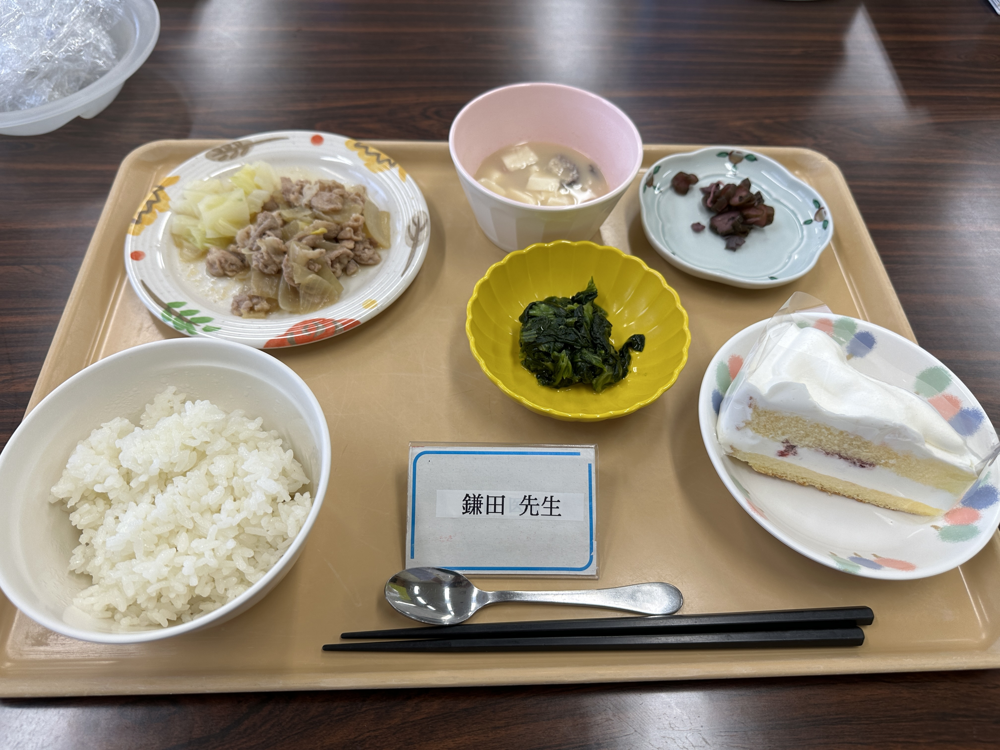

안녕! 29살 생일 축하해.
아무래도 상관없지만, 이 메시지를 쓰던 날 점심에 케이크가 나왔어. 갑자기 왜? 라고 생각했는데, 타이밍에 깜짝 놀랐어.
근데 경준이 생일을 어떻게 축하할까 계속 생각하고 있었는데, 편지나 선물을 보내도 그날에 도착할지도 모르겠고, 다음에 언제 만날지도 모르겠고,
그래도 꼭 당일에! 어떻게든 축하해주고 싶어서! 이렇게 홈페이지를 만들어봤어. 디지털 앨범(수제 엘범은 귀찮다)ㅋㅋㅋㅋㅋ
돈은 안 들었지만 '시간은 금이다' 라고 하잖아? 그리고 중요한건 마음이니까~.
앞으로도 함께 여러 곳을 다니며 새로운 도전도 하고 많이 행복한 시간을 보냈으면 좋겠다.
때로는 괴로운 일이나 슬픈 일도 있을지도 모르지만,서로 의지하고, 타협할 수 있으면 좋겠다.
떨어져 있어도 항상 옆에 있어줘서 고마워. 태어나줘서, 날 만나줘서, 오늘까지 열심히 살아줘서 고마워! 행복한 하루 보내~♡
p.s. 한국에서는 생일에 미역국을 먹는데 경준이가 미역을 못먹는다는것을 얼마전에 알고 충격을 받았던 ㅠㅠ 난 미역국 진짜 좋아하는데 ㅠㅠㅠㅠ
2024.04.15 마유가
やほ〜！29歳のお誕生日おめでとう。
このメッセージを書いてた日の昼食にケーキが出たの。突然なんで？と思ったし、タイミングにびっくりした。
ギョンちゃんの誕生日をどうやって祝おうかずっと考えてたんだけど、
手紙やプレゼントを送っても誕生日当日に届くか分からないし、次にいつ会えるか分からないし、
でもどうしても当日に！なんとかして祝いたくて！こうしてホームページを作ってみたの。
デジタルアルバムwww(アルバム作るのはめんどくさいじゃん)。
お金はかかっていないけど、「時は金なり」って言うじゃん？そして大切なのは気持ちだから〜。
これからも一緒に色々な所に行って、新しい挑戦もして、たくさん幸せな時間を過ごせたらいいな。
時には辛いことも悲しいこともあるかもしれないけど、お互い支え合って、歩み寄れたら嬉しいな。
離れていてもいつもそばにいてくれてありがとう。
生まれてきてくれて、私と出会ってくれて、今日まで頑張って生きていてくれてありがとう！
幸せな1日を過ごしてね♡
p.s. 韓国では誕生日にワカメスープを食べるらしいのに、ギョンちゃんがワカメ食べられないってこの前知ってショック泣泣
私ワカメスープ大好きなのに...